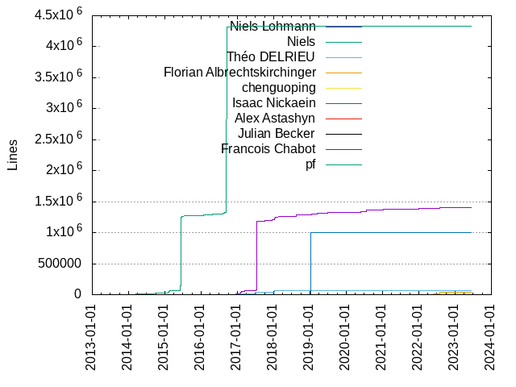
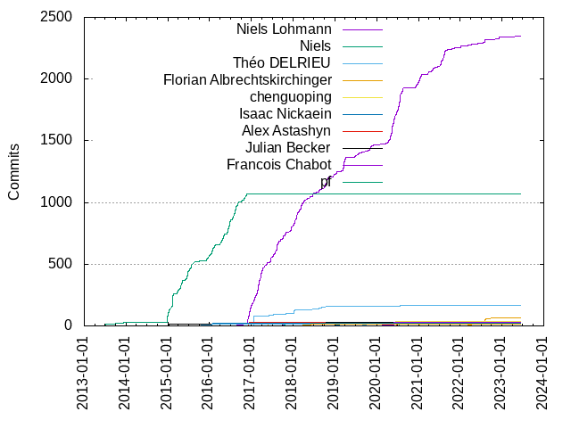

Authors
| Author | Commits (%) | + lines | - lines | First commit | Last commit | Age | Active days | # by commits |
|---|
| Niels Lohmann | 2347 (51.71%) | 1404871 | 6545065 | 2013-07-14 | 2023-06-13 | 3620 days, 23:06:59 | 700 | 1 |
| Niels | 1068 (23.53%) | 4326053 | 84278 | 2013-07-04 | 2016-11-22 | 1237 days, 21:59:51 | 241 | 2 |
| Théo DELRIEU | 166 (3.66%) | 69547 | 47702 | 2016-10-17 | 2021-10-14 | 1822 days, 19:37:53 | 67 | 3 |
| Florian Albrechtskirchinger | 62 (1.37%) | 36105 | 4752 | 2022-03-06 | 2022-09-25 | 202 days, 22:06:44 | 35 | 4 |
| chenguoping | 35 (0.77%) | 635 | 384 | 2020-03-14 | 2020-06-22 | 100 days, 15:04:00 | 21 | 5 |
| Isaac Nickaein | 31 (0.68%) | 1000716 | 132 | 2019-01-01 | 2019-11-13 | 315 days, 20:07:23 | 18 | 6 |
| Alex Astashyn | 30 (0.66%) | 1492 | 892 | 2016-12-03 | 2017-01-04 | 32 days, 0:15:07 | 8 | 7 |
| Julian Becker | 28 (0.62%) | 3423 | 914 | 2018-09-14 | 2018-10-18 | 33 days, 21:07:24 | 10 | 8 |
| Francois Chabot | 26 (0.57%) | 1822 | 1432 | 2020-02-19 | 2020-05-28 | 99 days, 6:39:37 | 6 | 9 |
| pf | 23 (0.51%) | 2073 | 766 | 2020-07-18 | 2020-07-20 | 1 day, 18:43:14 | 3 | 10 |
| Thomas Braun | 23 (0.51%) | 344 | 87 | 2016-08-24 | 2022-01-26 | 1980 days, 9:32:50 | 16 | 11 |
| HenryLee | 22 (0.48%) | 229 | 140 | 2017-05-26 | 2017-06-09 | 13 days, 7:03:28 | 6 | 12 |
| Anthony VH | 21 (0.46%) | 1209 | 726 | 2019-11-04 | 2021-09-12 | 677 days, 22:06:01 | 12 | 13 |
| Trevor Welsby | 20 (0.44%) | 3845 | 3614 | 2016-01-22 | 2016-01-29 | 6 days, 20:06:57 | 5 | 14 |
| gatopeich | 17 (0.37%) | 114 | 83 | 2020-06-21 | 2020-07-10 | 19 days, 2:06:09 | 6 | 15 |
| Raphael Isemann | 17 (0.37%) | 848 | 172 | 2015-01-05 | 2016-03-09 | 429 days, 21:26:44 | 5 | 16 |
| Perry Kundert | 17 (0.37%) | 470 | 293 | 2017-10-02 | 2017-10-16 | 13 days, 23:15:55 | 7 | 17 |
| Jamie Seward | 16 (0.35%) | 225 | 165 | 2017-10-15 | 2017-10-24 | 8 days, 1:17:47 | 6 | 18 |
| dariomt | 14 (0.31%) | 344 | 23 | 2015-10-07 | 2016-01-19 | 103 days, 22:29:34 | 5 | 19 |
| Guillaume Racicot | 13 (0.29%) | 255 | 32 | 2018-03-15 | 2020-06-06 | 813 days, 20:53:52 | 8 | 20 |
These didn't make it to the top: Aaron Burghardt, Jonathan Dumaresq, David Pfahler, Alexander Karzhenkov, onqtam, abolz, Matthias Möller, Qianqian Fang, Chuck Atkins, Robert Marki, Nikita Ofitserov, Jay Sistar, Ferry Huberts, Chris Kitching, Axel Huebl, Artöm Bakri Al-Sarmini, garethsb-sony, Antony Kellermann, Antonio Borondo, Vitaliy Manushkin, Théo Delrieu, Mike Bogdanov, Florian Weber, jprochazk, Vitaliy, Viktor Kirilov, Ted Lyngmo, Sergey Linev, Oleg Endo, Martin Stump, Krylov Yaroslav, Julius Rakow, Alexandre Hamez, Agustín F. Pozuelo, scinart, kevinlul, justanotheranonymoususer, gistrec, dependabot[bot], dan-42, Yixin Zhang, Xav83, Sven Fink, Sonu Lohani, Ryan Mulder, Rimas Misevičius, Raphael Grimm, Paul Fultz II, Patrik Huber, Patrick Boettcher, Michele Caini, Macr0Nerd, Eli Schwartz, David Avedissian, Dario Menendez, Carlos Gomes Martinho, Ben Berman, Anthony Van Herrewege, Amir Masoud Abdol, 郭荣飞, zerodefect, traits, raduteo, jbzdarkid, gregmarr, aodq, Vladimir Petrigo, Tushar Maheshwari, TotalCaesar659, T0b1-iOS, Mihai STAN, Michael Gmelin, Michael Balszun, Matthew Bauer, Mark Beckwith, Lukas Barth, Krzysztof Woś, Krzysiek Karbowiak, Kostiantyn Ponomarenko, Konstantin Podsvirov, Kevin Tonon, Kaido, Julien Hamaide, Joël Lamotte, Joyce, Joshua C. Randall, Jorrit Wronski, Jason Dsouza, Jared Grubb, Jan Schöppach, Hyeon Kim, Hubert Chathi, Giovanni Cerretani, Dirk Stolle, Daniel Frey, Daniel Cohen, Chocobo1, Chen, Camille Bégué, Bosswestfalen, ArthurSonzogni, Alexander “weej” Jones, Alexander Myasnikov, 郑少锟, 易思龙, Érico Rolim, whitesource-bolt-for-github[bot], tocic, theevilone45, silverweed, pketelsen, past-due, offa, njlr, mefyl, mb0202, martin-mfg, mandreyel, lieff, leozz37, knilch, kjpus, jothepro, ivanovmp, haadfida, flagarde, emvivre, dtoma, dota17, christian, bl-ue, abbaswasim, Yann E. MORIN, Wolf Vollprecht, Wilson, William A. Wieselquist, WebProdPP, Watal M. Iwasaki, WanCW, Volker Diels-Grabsch, Vitaly Zaitsev, Vertexwahn, Vasil Dimov, Vadim Evard, Tsz-Ho Yu, Trevor Hickey, Tommy Nguyen, Tomerkm, Tom Needham, Tobias Kux, Tobias Hermann, Taylor Howard, Tanuj Garg, Steffen Brem, Stefan Codrescu, Sergei Trofimovich, Ronak Buch, Romain Reignier, Richard Hozák, Remy Jette, Rafail Giavrimis, Quentin Barbarat, Prince Mendiratta, Pratik Chowdhury, Pierre Hallot, Paul Jurczak, Palmer Dabbelt, No, Nicolas Jakob, Nate Vargas, NN, Mário Feroldi, Muri Nicanor, Morten Fyhn Amundsen, Millian Poquet, Miguel Sacristan, Miguel Magalhães, Michael Reilly, Michael Nosthoff, Michael Macnair, Matěj Plch, Matthew K. Gumbel, Markus Werle, Manvendra Singh, Maarten Becker, Lv Zheng, Louis Dionne, Laurent Stacul, Kyle Thompson, KsaNL, Kirk Shoop, Kevin Dixon, JungHoon Lee, Jun Jie, Joseph Blackman, Jonathan Lee, Jonas Wittbrodt, Joe Burzinski, Jett LaRue, Jett, Jef LeCompte, Jean-Philippe Lemieux, James Upjohn, Jake Zimmerman, Jaakko Moisio, Ivor Wanders, Itja, Ilya Polishchuk, Ikko Ashimine, I, Huu Nguyen, Henry Fredrick Schreiner, Gregorio Litenstein, Greg Hurrell, Fraser, Florian Segginger, Florian Pigorsch, Finkman, Ferenc Nasztanovics, Faruk D, Evgenii Sopov, Evan Nemerson, Eren Okka, Elvis Oric, Elliot Goodrich, Doron Behar, DmitryKuk, Dimitris Apostolou, Dennis Fischer, Denis Andrejew, DavidKorczynski, David Guthrie, Dave Lee, DarkZeros, Danielc, Daniel Kopecek, Daniel Albuschat, Cristi Vîjdea, Corbin Hughes, Colin Hirsch, Christoph Jud, Chris Harris, Carlos O'Ryan, Carl Smedstad, Bruno Oliveira, Berkus Decker, Benjamin A. Beasley, Arthur Sonzogni, Arseniy Terekhin, Arsen Arsenović, Antoine Cœur, Annihil, Andreas Smas, Andreas Schwab, Andrea Pappacoda, Andrea Cocito, Alex Reinking, Alex Beregszaszi, AQNOUCH Mohammed, 0xflotus
Only top 20 authors shown
Only top 20 authors shown
| Month | Author | Commits (%) | Next top 5 | Number of authors |
|---|
| 2023-06 | Niels Lohmann | 2 (40.00% of 5) | gregmarr, Tomerkm, No | 4 |
| 2023-05 | Niels Lohmann | 1 (100.00% of 1) | | 1 |
| 2023-03 | Joyce | 2 (25.00% of 8) | theevilone45, dependabot[bot], Sergei Trofimovich, Raphael Grimm, Nicolas Jakob | 7 |
| 2023-01 | haadfida | 1 (25.00% of 4) | Raphael Grimm, Florian Segginger, Finkman | 4 |
| 2022-12 | Niels Lohmann | 22 (91.67% of 24) | dependabot[bot], DavidKorczynski | 3 |
| 2022-10 | dependabot[bot] | 1 (100.00% of 1) | | 1 |
| 2022-09 | Florian Albrechtskirchinger | 4 (44.44% of 9) | Niels Lohmann, tocic, Vertexwahn, Dirk Stolle | 5 |
| 2022-08 | Florian Albrechtskirchinger | 20 (48.78% of 41) | Niels Lohmann, Raphael Grimm, Ikko Ashimine | 4 |
| 2022-07 | Florian Albrechtskirchinger | 16 (47.06% of 34) | Niels Lohmann, Wolf Vollprecht, Romain Reignier, NN, KsaNL | 8 |
| 2022-06 | Florian Albrechtskirchinger | 6 (40.00% of 15) | Niels Lohmann, Qianqian Fang, 郑少锟, ivanovmp, Richard Hozák | 7 |
| 2022-05 | Qianqian Fang | 5 (41.67% of 12) | Niels Lohmann, Florian Albrechtskirchinger | 3 |
| 2022-04 | Florian Albrechtskirchinger | 8 (42.11% of 19) | Niels Lohmann, flagarde, Qianqian Fang, Michael Nosthoff, Krzysiek Karbowiak | 8 |
| 2022-03 | Niels Lohmann | 5 (41.67% of 12) | Florian Albrechtskirchinger, Krzysiek Karbowiak, Andrea Cocito | 4 |
| 2022-02 | Niels Lohmann | 2 (66.67% of 3) | Faruk D | 2 |
| 2022-01 | Niels Lohmann | 14 (73.68% of 19) | pketelsen, Thomas Braun, Giovanni Cerretani, Ferry Huberts, Dimitris Apostolou | 6 |
| 2021-12 | Niels Lohmann | 5 (83.33% of 6) | Maarten Becker | 2 |
| 2021-11 | Niels Lohmann | 3 (42.86% of 7) | Prince Mendiratta, Dirk Stolle, Daniel Albuschat, Alex Beregszaszi | 5 |
| 2021-10 | Niels Lohmann | 10 (71.43% of 14) | Théo DELRIEU, Cristi Vîjdea, Carl Smedstad | 4 |
| 2021-09 | Niels Lohmann | 2 (66.67% of 3) | Anthony VH | 2 |
| 2021-08 | Niels Lohmann | 78 (82.98% of 94) | Ferry Huberts, Sven Fink, Amir Masoud Abdol, mb0202, Pierre Hallot | 8 |
| 2021-07 | Niels Lohmann | 54 (100.00% of 54) | | 1 |
| 2021-06 | Niels Lohmann | 8 (53.33% of 15) | justanotheranonymoususer, David Pfahler, Rafail Giavrimis, Louis Dionne | 5 |
| 2021-05 | Niels Lohmann | 26 (76.47% of 34) | Jason Dsouza, David Pfahler, offa, TotalCaesar659, Morten Fyhn Amundsen | 7 |
| 2021-04 | Niels Lohmann | 13 (59.09% of 22) | David Pfahler, raduteo | 3 |
| 2021-03 | Niels Lohmann | 18 (64.29% of 28) | Anthony VH, abbaswasim, Remy Jette, Fraser, Doron Behar | 8 |
| 2021-02 | Niels Lohmann | 5 (83.33% of 6) | William A. Wieselquist | 2 |
| 2021-01 | Niels Lohmann | 57 (79.17% of 72) | Anthony VH, bl-ue | 3 |
| 2020-12 | Niels Lohmann | 46 (70.77% of 65) | Alexander Karzhenkov, Martin Stump, Krylov Yaroslav, jbzdarkid, Sergey Linev | 7 |
| 2020-11 | Joseph Blackman | 1 (100.00% of 1) | | 1 |
| 2020-10 | jbzdarkid | 1 (50.00% of 2) | Sergey Linev | 2 |
| 2020-09 | Niels Lohmann | 2 (50.00% of 4) | leozz37, Alexander Karzhenkov | 3 |
| 2020-08 | Niels Lohmann | 43 (95.56% of 45) | Ronak Buch, Jun Jie | 3 |
| 2020-07 | Niels Lohmann | 140 (73.30% of 191) | pf, jprochazk, gatopeich, Agustín F. Pozuelo, Thomas Braun | 15 |
| 2020-06 | Niels Lohmann | 80 (71.43% of 112) | gatopeich, chenguoping, Thomas Braun, Guillaume Racicot, Tanuj Garg | 7 |
| 2020-05 | Niels Lohmann | 150 (78.12% of 192) | Francois Chabot, chenguoping, Antony Kellermann, gistrec, TotalCaesar659 | 9 |
| 2020-04 | Niels Lohmann | 37 (67.27% of 55) | Artöm Bakri Al-Sarmini, chenguoping, Rimas Misevičius, Hubert Chathi, ArthurSonzogni | 8 |
| 2020-03 | chenguoping | 7 (36.84% of 19) | Niels Lohmann, Sergey Linev, garethsb-sony, Miguel Magalhães, Francois Chabot | 8 |
| 2020-02 | Francois Chabot | 7 (53.85% of 13) | Niels Lohmann, Chen, dota17, Antoine Cœur | 5 |
| 2020-01 | Niels Lohmann | 6 (50.00% of 12) | Joël Lamotte, jothepro, Paul Jurczak, Evgenii Sopov, Dave Lee | 6 |
| 2019-12 | Niels Lohmann | 3 (50.00% of 6) | Carlos Gomes Martinho, Sonu Lohani | 3 |
| 2019-11 | Niels Lohmann | 39 (73.58% of 53) | Isaac Nickaein, Michael Balszun, Anthony VH, whitesource-bolt-for-github[bot], Konstantin Podsvirov | 8 |
| 2019-10 | Niels Lohmann | 10 (40.00% of 25) | Thomas Braun, Anthony Van Herrewege, Camille Bégué, Julien Hamaide, Florian Pigorsch | 7 |
| 2019-09 | Niels Lohmann | 7 (41.18% of 17) | Xav83, christian, Thomas Braun, Miguel Sacristan, Julien Hamaide | 9 |
| 2019-08 | Thomas Braun | 8 (66.67% of 12) | Niels Lohmann, Palmer Dabbelt | 3 |
| 2019-07 | Niels Lohmann | 30 (88.24% of 34) | Tommy Nguyen, Michael Reilly, Konstantin Podsvirov, Eli Schwartz | 5 |
| 2019-06 | Isaac Nickaein | 9 (42.86% of 21) | Niels Lohmann, kevinlul, Taylor Howard | 4 |
| 2019-05 | Niels Lohmann | 2 (50.00% of 4) | Isaac Nickaein | 2 |
| 2019-04 | Niels Lohmann | 16 (66.67% of 24) | Théo DELRIEU, Macr0Nerd, Isaac Nickaein | 4 |
| 2019-03 | Niels Lohmann | 94 (87.85% of 107) | onqtam, Viktor Kirilov, Watal M. Iwasaki, Ferenc Nasztanovics | 5 |
| 2019-02 | Niels Lohmann | 5 (31.25% of 16) | Isaac Nickaein, garethsb-sony, njlr, lieff, Laurent Stacul | 7 |
| 2019-01 | Niels Lohmann | 23 (43.40% of 53) | Isaac Nickaein, scinart, onqtam, Patrick Boettcher, Michele Caini | 14 |
| 2018-12 | Niels Lohmann | 19 (51.35% of 37) | Jonathan Dumaresq, David Avedissian, kjpus, Yann E. MORIN, Pratik Chowdhury | 7 |
| 2018-11 | Niels Lohmann | 7 (43.75% of 16) | Axel Huebl, mefyl, Théo DELRIEU, Millian Poquet, David Avedissian | 6 |
| 2018-10 | Niels Lohmann | 74 (76.29% of 97) | Julian Becker, Antonio Borondo, Théo DELRIEU, Chuck Atkins, Kostiantyn Ponomarenko | 7 |
| 2018-09 | Niels Lohmann | 20 (31.75% of 63) | Julian Becker, Théo DELRIEU, Chuck Atkins, mandreyel, knilch | 11 |
| 2018-08 | Niels Lohmann | 24 (80.00% of 30) | Ben Berman, Tsz-Ho Yu, Théo DELRIEU, Hyeon Kim, Dennis Fischer | 6 |
| 2018-07 | Niels Lohmann | 6 (46.15% of 13) | Théo DELRIEU, Michael Gmelin, Hyeon Kim | 4 |
| 2018-06 | Niels Lohmann | 28 (59.57% of 47) | Guillaume Racicot, Vitaliy, Julius Rakow, Théo DELRIEU, Sonu Lohani | 7 |
| 2018-05 | Niels Lohmann | 24 (82.76% of 29) | Matthias Möller, martin-mfg, Théo DELRIEU | 4 |
| 2018-04 | Niels Lohmann | 26 (72.22% of 36) | Jan Schöppach, Chuck Atkins, Axel Huebl, Kevin Tonon, James Upjohn | 8 |
| 2018-03 | Niels Lohmann | 60 (83.33% of 72) | Vitaliy Manushkin, Guillaume Racicot, Mike Bogdanov, Kevin Tonon | 5 |
| 2018-02 | Niels Lohmann | 49 (81.67% of 60) | Théo DELRIEU, Paul Fultz II, Patrik Huber, Wilson | 5 |
| 2018-01 | Niels Lohmann | 75 (78.12% of 96) | abolz, Théo DELRIEU, zerodefect, Kaido, Vadim Evard | 7 |
| 2017-12 | Niels Lohmann | 51 (86.44% of 59) | Mike Bogdanov, Théo DELRIEU, Matthias Möller, Matthew K. Gumbel, Eren Okka | 6 |
| 2017-11 | Niels Lohmann | 6 (46.15% of 13) | Matthias Möller, Jorrit Wronski | 3 |
| 2017-10 | Niels Lohmann | 50 (57.47% of 87) | Perry Kundert, Jamie Seward, Théo DELRIEU, Sonu Lohani, Nate Vargas | 7 |
| 2017-09 | Niels Lohmann | 24 (96.00% of 25) | gregmarr | 2 |
| 2017-08 | Niels Lohmann | 79 (71.82% of 110) | Théo DELRIEU, traits, WebProdPP, Markus Werle, Kyle Thompson | 8 |
| 2017-07 | Niels Lohmann | 52 (65.82% of 79) | Théo DELRIEU, Nikita Ofitserov, Oleg Endo, dan-42, Ryan Mulder | 7 |
| 2017-06 | Niels Lohmann | 41 (74.55% of 55) | HenryLee, Théo DELRIEU, Chocobo1, Steffen Brem | 5 |
| 2017-05 | Niels Lohmann | 24 (48.98% of 49) | HenryLee, Jay Sistar, 郭荣飞 | 4 |
| 2017-04 | Niels Lohmann | 51 (98.08% of 52) | Théo DELRIEU | 2 |
| 2017-03 | Niels Lohmann | 134 (91.78% of 146) | Ted Lyngmo, Lukas Barth, Krzysztof Woś, Vladimir Petrigo, Théo DELRIEU | 8 |
| 2017-02 | Niels Lohmann | 75 (96.15% of 78) | Tushar Maheshwari, Mihai STAN | 3 |
| 2017-01 | Niels Lohmann | 70 (54.69% of 128) | Théo DELRIEU, Alex Astashyn, Mihai STAN, Jonathan Lee, Jared Grubb | 6 |
| 2016-12 | Niels Lohmann | 105 (70.00% of 150) | Alex Astashyn, Théo DELRIEU, Yixin Zhang, Daniel Cohen, Bosswestfalen | 8 |
| 2016-11 | Niels Lohmann | 41 (44.09% of 93) | Niels, Théo DELRIEU, Théo Delrieu | 4 |
| 2016-10 | Niels | 28 (63.64% of 44) | Théo DELRIEU, Niels Lohmann, Vladimir Petrigo, Vasil Dimov, Théo Delrieu | 7 |
| 2016-09 | Niels | 20 (90.91% of 22) | Stefan Codrescu, Christoph Jud | 3 |
| 2016-08 | Niels | 85 (94.44% of 90) | Niels Lohmann, Thomas Braun | 3 |
| 2016-07 | Niels | 51 (98.08% of 52) | Muri Nicanor | 2 |
| 2016-06 | Niels | 90 (96.77% of 93) | dtoma, Tom Needham, Mário Feroldi | 4 |
| 2016-05 | Niels | 32 (80.00% of 40) | Chris Kitching, Robert Marki | 3 |
| 2016-04 | Niels | 61 (92.42% of 66) | Robert Marki | 2 |
| 2016-03 | Niels | 11 (73.33% of 15) | Raphael Isemann, Lv Zheng, Kevin Dixon, Annihil | 5 |
| 2016-02 | Niels | 26 (92.86% of 28) | Michael Macnair, Jett LaRue | 3 |
| 2016-01 | Niels | 61 (70.11% of 87) | Trevor Welsby, dariomt, Volker Diels-Grabsch, Corbin Hughes | 5 |
| 2015-12 | Niels | 38 (100.00% of 38) | | 1 |
| 2015-11 | Robert Marki | 1 (33.33% of 3) | Niels, Jett | 3 |
| 2015-10 | Niels | 11 (45.83% of 24) | dariomt, Dario Menendez | 3 |
| 2015-09 | Daniel Frey | 2 (40.00% of 5) | silverweed, emvivre, Colin Hirsch | 4 |
| 2015-08 | Niels | 22 (95.65% of 23) | Huu Nguyen | 2 |
| 2015-07 | Niels | 48 (100.00% of 48) | | 1 |
| 2015-06 | Niels | 78 (95.12% of 82) | Alexandre Hamez | 2 |
| 2015-05 | Niels | 38 (90.48% of 42) | Aaron Burghardt, 易思龙, AQNOUCH Mohammed | 4 |
| 2015-04 | Niels | 48 (88.89% of 54) | Florian Weber, Daniel Kopecek | 3 |
| 2015-03 | Niels | 22 (91.67% of 24) | Aaron Burghardt | 2 |
| 2015-02 | Niels | 108 (90.76% of 119) | Aaron Burghardt, Joshua C. Randall | 3 |
| 2015-01 | Niels | 72 (78.26% of 92) | Raphael Isemann, WanCW, Trevor Hickey, Kirk Shoop, Elliot Goodrich | 6 |
| 2014-12 | Niels | 56 (100.00% of 56) | | 1 |
| 2013-12 | Niels | 8 (100.00% of 8) | | 1 |
| 2013-07 | Niels | 18 (94.74% of 19) | Niels Lohmann | 2 |
| Year | Author | Commits (%) | Next top 5 | Number of authors |
|---|
| 2023 | Niels Lohmann | 3 (16.67% of 18) | Raphael Grimm, Joyce, theevilone45, haadfida, gregmarr | 14 |
| 2022 | Niels Lohmann | 88 (46.56% of 189) | Florian Albrechtskirchinger, Qianqian Fang, dependabot[bot], Krzysiek Karbowiak, 郑少锟 | 32 |
| 2021 | Niels Lohmann | 279 (78.59% of 355) | Anthony VH, David Pfahler, Ferry Huberts, justanotheranonymoususer, Sven Fink | 35 |
| 2020 | Niels Lohmann | 511 (71.87% of 711) | chenguoping, Francois Chabot, pf, gatopeich, Alexander Karzhenkov | 52 |
| 2019 | Niels Lohmann | 240 (64.52% of 372) | Isaac Nickaein, Thomas Braun, onqtam, garethsb-sony, Viktor Kirilov | 47 |
| 2018 | Niels Lohmann | 412 (69.13% of 596) | Théo DELRIEU, Julian Becker, Jonathan Dumaresq, Guillaume Racicot, abolz | 47 |
| 2017 | Niels Lohmann | 657 (74.57% of 881) | Théo DELRIEU, HenryLee, Perry Kundert, Jamie Seward, Nikita Ofitserov | 40 |
| 2016 | Niels | 500 (64.10% of 780) | Niels Lohmann, Alex Astashyn, Théo DELRIEU, Trevor Welsby, Chris Kitching | 32 |
| 2015 | Niels | 486 (87.73% of 554) | Raphael Isemann, Aaron Burghardt, dariomt, Florian Weber, Alexandre Hamez | 22 |
| 2014 | Niels | 56 (100.00% of 56) | | 1 |
| 2013 | Niels | 26 (96.30% of 27) | Niels Lohmann | 2 |
| Domains | Total (%) |
|---|
| gmail.com | 2143 (47.21%) |
|---|
| nlohmann.me | 1706 (37.59%) |
|---|
| tanker.io | 114 (2.51%) |
|---|
| users.noreply.github.com | 71 (1.56%) |
|---|
| 163.com | 36 (0.79%) |
|---|
| Alexs-MacBook-Pro.local | 30 (0.66%) |
|---|
| yahoo.com | 25 (0.55%) |
|---|
| anthonyvh.com | 24 (0.53%) |
|---|
| hotmail.com | 23 (0.51%) |
|---|
| byte-physics.de | 22 (0.48%) |
|---|